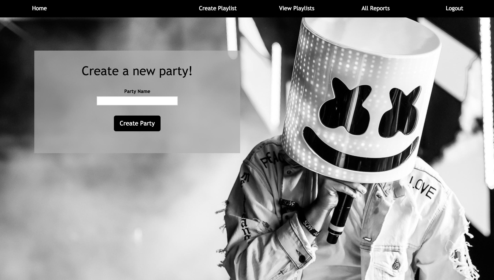
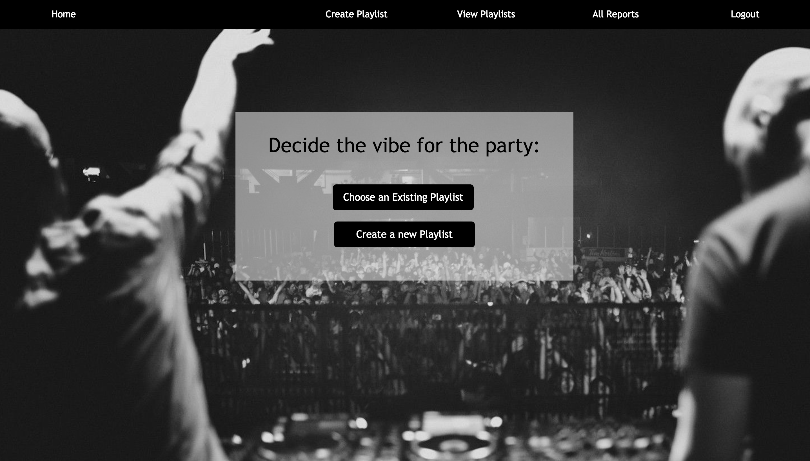
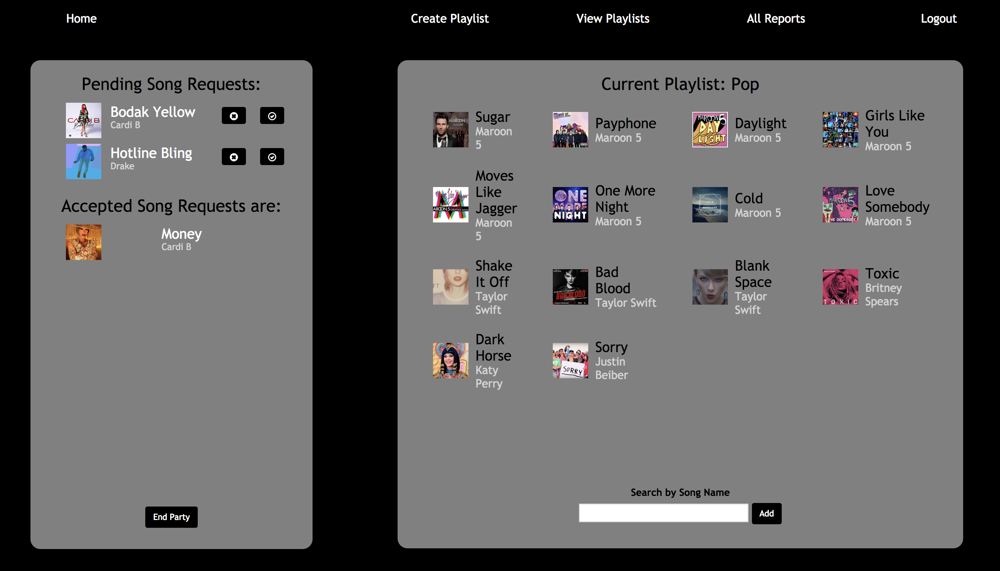
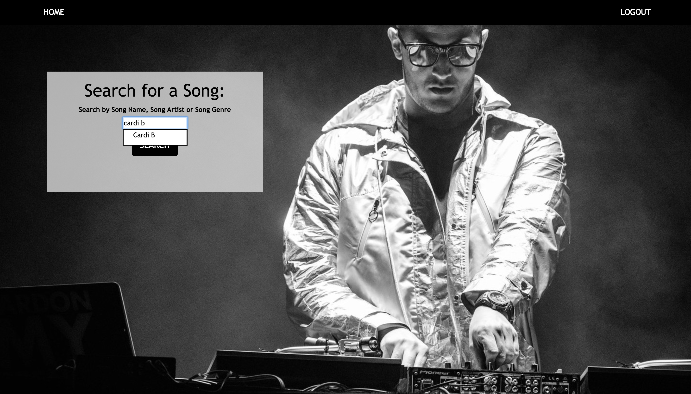

DJ Party
DJ Party is a web application designed to assist a DJ to manage song requests made by guests at a party. It also gave them an opportunity to improve his/her playlist based on a recommendation report generated at the end of the party. The front-end of the application was developed using HTML, CSS, Bootstrap and jQuery and the back-end was created using Python Flask Api and SQL database.

The application had a black and white color theme. The button's were highlighted with black to guide the user through the application. The color contrast between the white background of the container and the black color of the the text helped in highlighting the important content on the page.

Images related to popular DJs and parties around the world were used to set the tone and vibe of the application. Text was posiitioned on the empty spaces of these background images to efficiently utilise the blank space on the page and also attract the attention of the user to the text on the page.

Text was positioned eiter on the top left or the center of the pages to ensure that it was the first element the user noticed as they launched a page. Color contrast between the text was used to provide unimportant data on the screen without drawing away attention from the relevant information.

The application also had a search functionality to assist users while searching for songs on the application. The top navigation bar provided them an effortless way to traverse through the multiple pages on the app.
